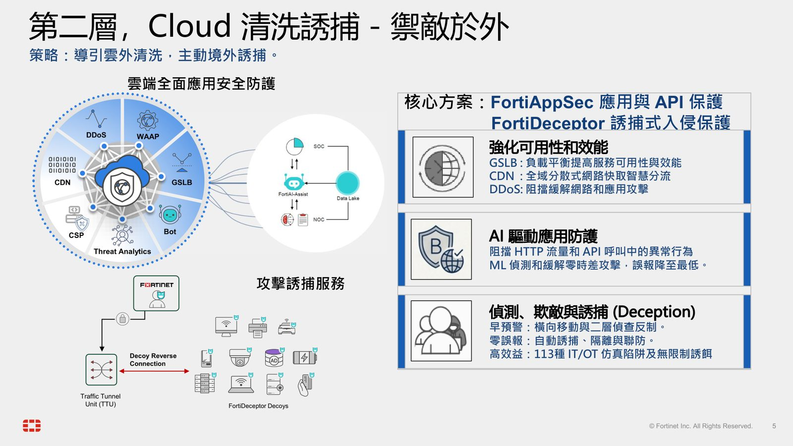
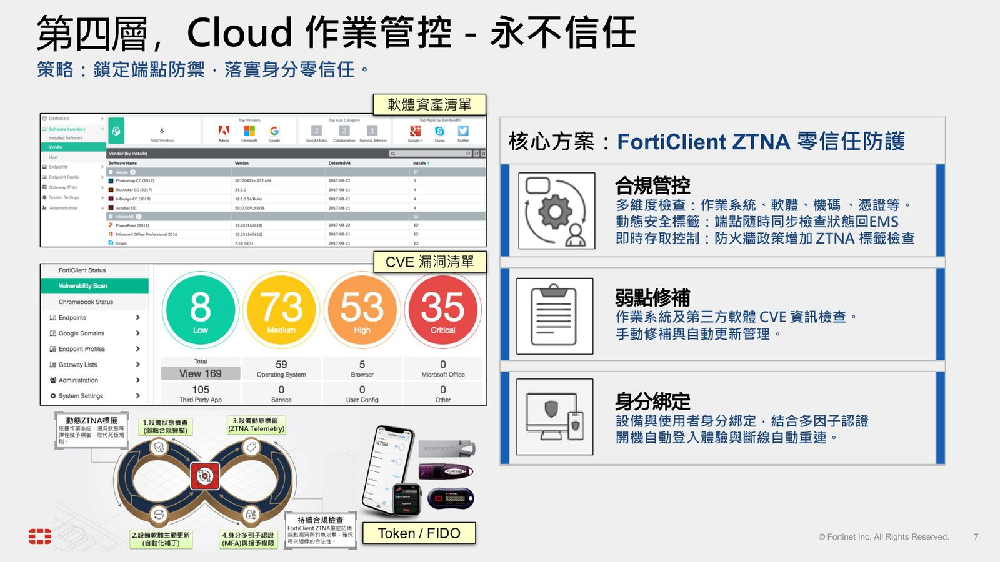
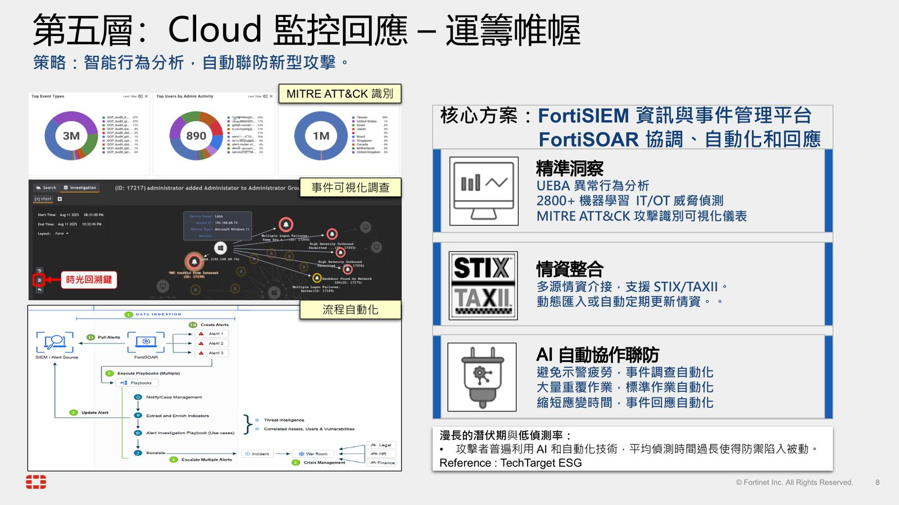
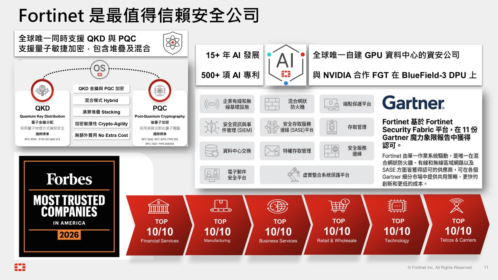

摘要
本演講針對 Agentic AI 浪潮下攻擊者開發週期縮短、攻擊技術門檻下降及利用合法工具偽裝入侵的資安威脅，提出 Fortinet 驅動防禦韌性的雲端多層防護架構。講者 James Wang 拆解了由五層防線構成的雲端防護策略：第一層「攻擊預警（FortiRecon）」進行外部攻擊面盤點；第二層「清洗誘捕（FortiAppSec & FortiDeceptor）」以應用程式清洗與仿真陷阱實現欺敵防禦；第三層「深度安全（FortiGate & FortiWeb）」嚴防漏洞，並首度支援量子敏捷加密（QKD/PQC）；第四層「作業管控（FortiClient）」落實動態合規的零信任存取（ZTNA）；第五層「監控回應（FortiSIEM & FortiSOAR）」結合異常行為分析與 MITRE ATT&CK 聯防。本演講為企業提供了如何整合端點、網路與安全事件管理，打造自愈型 AI 驅動雲端安全體系的具體指南。
重點整理
- AI 縮短攻擊開發週期，數分鐘即可生成攻擊腳本，並大幅降低攻擊技術門檻
- 提出雲端多層次防護的五層架構：攻擊預警、清洗誘捕、深度安全、作業管控、監控回應
- FortiRecon 提供持續攻擊面管理，涵蓋外部攻擊面管理（EASM）、品牌保護與對手情報
- FortiClient 落實零信任存取（ZTNA），結合多維度合規檢查與弱點修補管理
- FortiSIEM 搭配 FortiSOAR 以 UEBA 異常行為分析與 MITRE ATT&CK 視覺化儀表，實現自動化聯防
重點圖片／架構圖




AI 時代的全球威脅趨勢
根據 Fortinet《全球威脅情勢報告》，AI 正在大幅改變攻擊生態：攻擊者能在數分鐘內生成攻擊腳本，縮短攻擊開發週期；AI 也降低了攻擊技術門檻，使掃描、入侵與多國語言釣魚郵件得以量產；此外，攻擊者更擅長利用 PowerShell、WMI、遠端桌面等內建合法工具偽裝攻擊，藉此繞過傳統偵測機制。
五層次雲端防護策略
講者提出打造雲端多層次防護、層層鎖定的策略：第一層「Cloud 攻擊預警」掌握攻擊視角、盤點雲端資產；第二層「Cloud 清洗誘捕」導引雲外清洗、主動境外誘捕；第三層「Cloud 深度安全」監控雲端服務、嚴防應用漏洞；第四層「Cloud 作業管控」鎖定端點、落實零信任；第五層「Cloud 監控回應」透過智能行為分析自動聯防新型攻擊。
禦敵於外與深度安全防線
第二層核心方案為 FortiAppSec 應用與 API 保護，結合 WAAP、Bot、Threat Analytics、GSLB、CDN 與 DDoS 防護，並搭配 FortiDeceptor 誘捕式入侵保護，提供 113 種 IT/OT 仿真陷阱進行早期預警與零誤報的欺敵防禦。第三層則以 FortiGate 網路層防火牆與 FortiWeb 應用層防火牆進行深度檢測，並支援 FIPS 203/204/205 量子安全規範，同時支援 QKD 與 PQC 混合模式。
零信任端點管控與智能監控回應
第四層核心方案 FortiClient ZTNA 零信任防護，透過多維度合規檢查（作業系統、軟體、機碼、憑證）、動態安全標籤與即時存取控制，並結合弱點修補與身分綁定（含多因子認證）強化端點防禦。第五層則由 FortiSIEM 資訊與事件管理平台搭配 FortiSOAR 協調自動化回應，運用 2800+ 機器學習 IT/OT 威脅偵測模型與 MITRE ATT&CK 攻擊識別可視化儀表，達成精準洞察與自動協作聯防。
Fortinet 的信任基礎與 AI 專利實力
講者最後強調 Fortinet 在六大產業（商業服務、金融服務、電信、科技、零售、製造）皆位居最值得信賴安全公司前十名，累積 15 年以上 AI 發展經驗與 500 項以上 AI 專利，並且是全球唯一自建 GPU 資料中心的資安公司，與 NVIDIA 合作在 BlueField-3 DPU 上運行 FortiGate，同時也是全球唯一同時支援 QKD 與 PQC 量子敏捷加密的資安廠商。